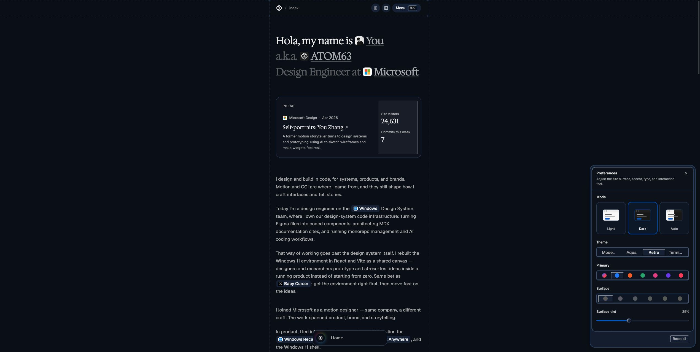
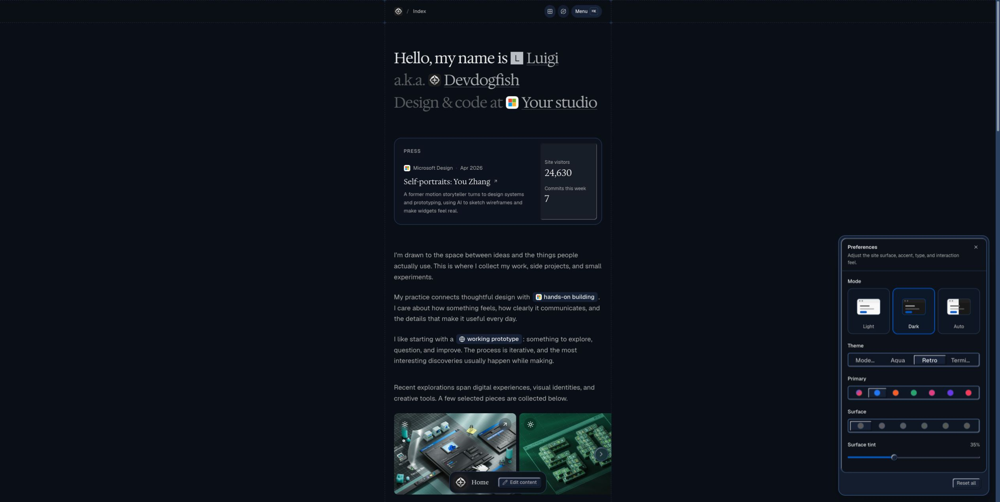

<!doctype html><html lang="en"><meta charset="utf-8"><meta name="viewport" content="width=device-width,initial-scale=1"><title>Original / replica — interaction comparison</title><style>*{box-sizing:border-box}body{margin:0;padding:24px;background:#070c15;color:#d4d9e3;font:14px system-ui}main{display:flex;gap:24px;justify-content:center}figure{margin:0}figcaption{font-weight:600;margin-bottom:16px}.panel{width:384px;height:663px;position:relative;overflow:hidden}.panel img{position:absolute;max-width:none}footer{text-align:center;margin-top:22px;font-size:12px;color:#929cae}a{color:inherit}@media(max-width:820px){main{justify-content:flex-start}}</style><main><figure><figcaption>Original · atom63.io</figcaption><div class="panel"></div></figure><figure><figcaption>Replica · local</figcaption><div class="panel"></div></figure></main><footer>Captured at the same 384px panel width · <a href="http://127.0.0.1:5173/">Open editable replica</a></footer></html>
